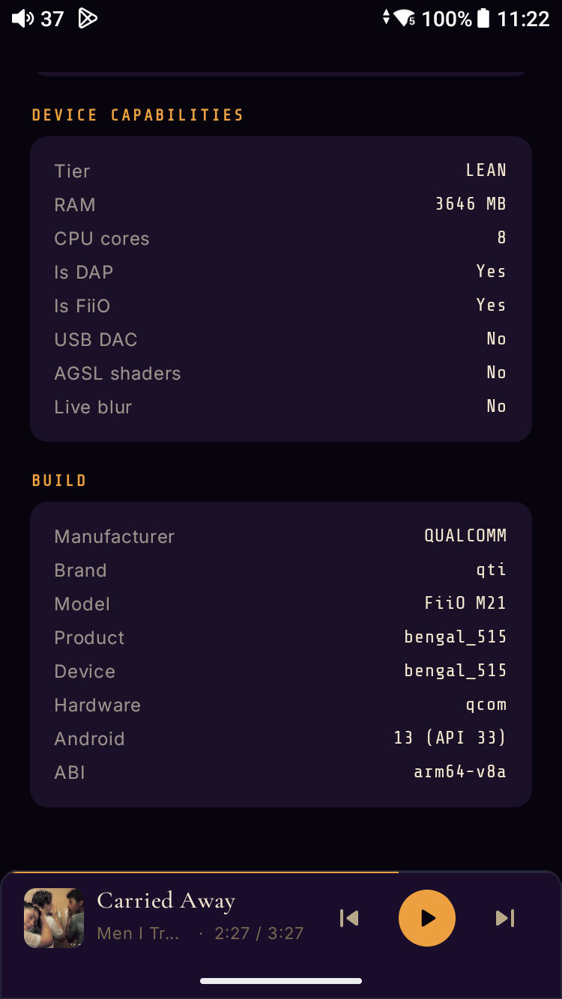
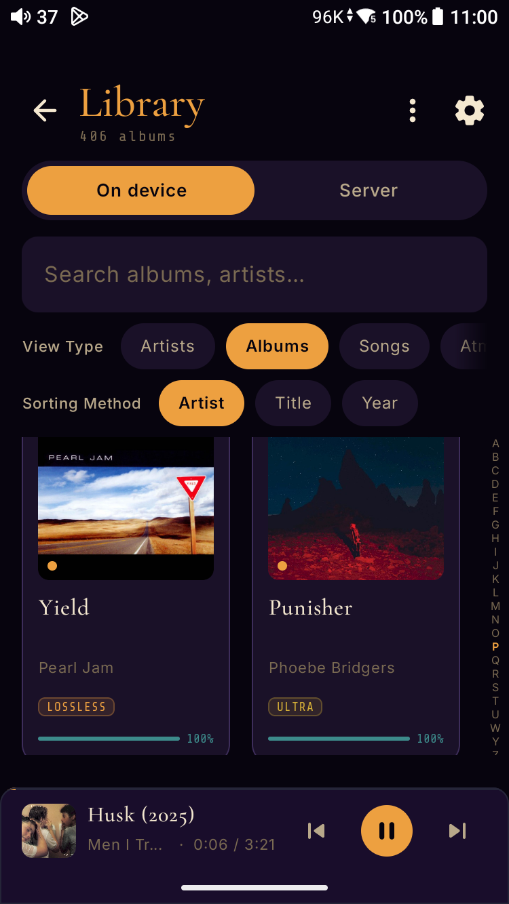
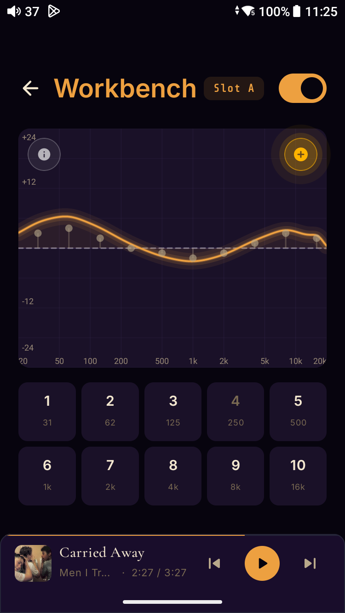

By default, Android resamples your music to 48 kHz. Meringo takes your DAC off that path — and hands you the receipt.
Plug in a USB DAC or dongle and Meringo drives it directly, every track at its native rate. Then it hashes what it shipped, so you can check the math yourself.
A real receipt from Meringo 1.28.5: a 24-bit/96 kHz FLAC sent to a Qudelix 5K. Check it yourself
| Sent to your DAC | iso pipe → DAC endpoint | cb459147…295adf |
|---|---|---|
| Re-decoded from the file | same file, re-decoded | cb459147…295adf |
| Result | BIT-IDENTICAL ✓ | |
Free to install, with a seven-day full trial. Then $9.99, once. No subscription.
- Plays
- Your FLAC and ALAC files, and a Jellyfin or Subsonic library, Navidrome included.
- Runs on
- Android 13 or newer, on a phone or a DAP.
- Needs
- Nothing extra to play. For the receipt, a USB DAC or dongle.
Diagnostics
What the device actually reports.
Open Settings → Audio Diagnostics on any Meringo build and the screen reads back exactly what the engine sees: device tier (LEAN / BALANCED / FLAGSHIP), RAM ceiling, CPU core count, USB-DAC presence, manufacturer, model, Android level, ABI. The buffer profile, the visualizer policy, the thermal-aware worker batch limits — every one of those numbers is derived from these values at cold start.
The screenshot is a real readout from a FiiO M21. Quote it in a support ticket and the values are reproducible cold start to cold start — same hardware, same readout, no telemetry round-trip required to produce them. Being honest about the bits begins with being honest about the silicon they're running on.

Verify it yourself
Don't trust the green light. Prove it.
Plenty of players claim bit-perfect output. Meringo is the only one that hands you a cryptographic receipt. Plug in a USB DAC, open Settings → Audio diagnostics, and arm Verified Capture — Meringo writes every byte it hands to the isochronous pipe and computes a SHA-256 over the whole stream.
Then point it back at the same file. Meringo re-decodes it, lays the PCM out in the identical iso-pipe format, and hashes that. Matching hashes mean that nothing — no resample, no requantise, no EQ, no ReplayGain — touched a single bit between the file and the pipe. Both hashes run on your own device, and you can re-hash the receipt with tools we don't control (below) — proof you can check, not a checkmark you take on faith. No other player hands you that.
Where the proof stops, precisely: it covers everything Meringo sent. Isochronous USB carries no delivery acknowledgement — the spec trades that away for constant latency — so no software on any platform can prove what the DAC received, only what was put on the wire for it. That boundary belongs to USB Audio Class, not to us. What a match settles is the part that was ever in doubt: whether the operating system, the mixer, or the app's own DSP touched your music.
Not a mockup: verified bit-identical across three DACs and six receipts — Fosi DS2 at both 16/44.1 and 24/96, Qudelix 5K (24/96, on two releases), and the Jcally JM6 Pro (16/96 and 24/96) — each with its own shareable receipt. In the latest pair, two physically different DACs returned the same SHA-256 from the same 24/96 file. Every published chain lives in the receipt registry — yours can join it.
And "anyone can check it" is literal: the exact byte layout, ffmpeg one-liners, and a public-domain checker script that shares no code with Meringo are published at meringo.app/verify — recompute a receipt's hash from your own copy of the file, with tools we don't control.
═════════════════════════ MERINGO · BIT-PERFECT 1.28.5 · Qudelix 5K · 24/96 ═════════════════════════ [Capture] iso pipe → DAC endpoint cb459147…295adf [Source decode] same file, re-decoded cb459147…295adf BIT-IDENTICAL ✓
Ch. 01 — The Library
Two lenses. One library.
Meringo gives you a dual-lens library: a Vault of local FLAC and ALAC files, and a Cloud lens that spans Jellyfin and the Subsonic / OpenSubsonic family — Navidrome, Airsonic, and friends.
Each lens stands on its own — toggle, search, and sort within the world you're in. But when the same recording lives on more than one source, Meringo collapses the duplicate intelligently: Vault wins over Jellyfin wins over Subsonic, matched by MusicBrainz Recording ID, ISRC, a metadata tuple, or an acoustic-fingerprint twin link when the tags disagree. An ⊕ Also on the server banner on the Album page tells you when the other lens holds a copy too — and offers a one-tap switch to it. Quality chips on every album — ULTRA for 24-bit at 88.2 kHz and up, HD for the rest of hi-res, LOSSLESS for CD-spec — round out the rack at a glance.
Jellyfin. Or any server that speaks Subsonic.
Two paths into the same shared library. Jellyfin gets first-class treatment. The Subsonic family — Navidrome, Airsonic, Funkwhale, Gonic, Ampache, and every other server that implements the OpenSubsonic API — gets the same fidelity-first connection posture: bit-perfect direct play, no transcoding, password never stored beyond the hash derived from it. URL, username, password, Connect. Set it once.
Connect both at the same time if you have both. The library collapses twin recordings to a single entry across all three sources (Vault + Jellyfin + Subsonic) using the MusicBrainz → ISRC → metadata tuple → Chromaprint match chain. Same dedup rules everywhere.

Ch. 02 — The Engine
Bit-perfect. End to end.
By default, every sample reaches your DAC at the recording's native rate and depth.
| On the badge | What it means |
|---|---|
| BIT-PERFECT | Nothing between the file and the output changed a sample. |
| EQd | Your EQ is shaping the sound. With linear phase on, the Audio Path sheet adds FIR-LP. |
| Scaled | ReplayGain, the headphone-correction preamp or the Auto-Gain trim changed the level. The Audio Path sheet shows by how many dB. |
| INTERNAL SRC | You turned on Force Output Sample Rate, so Meringo resamples every track to one fixed rate. |
| RESAMPLED | Android’s audio system is changing the sample rate. |
| TRUNCATED | The bit depth is being cut on the way out. |
| Bluetooth | Bluetooth always re-encodes the stream, so this route is never bit-perfect. |
| DAC | USB | Receipts |
|---|---|---|
| Fosi DS2 | UAC2 high-speed async | 16-bit/44.1 kHz and 24-bit/96 kHz |
| Qudelix 5K | UAC1 full-speed sync | 24-bit/96 kHz, on two releases |
| Jcally JM6 Pro | UAC1 high-speed sync | 16-bit/96 kHz and 24-bit/96 kHz |
What the hardware's spec sheet supports and what Meringo has verified are different claims, and we only print the second as proof.
The 64-bit EQ and the linear-phase filter
The EQ engine runs in 64-bit double precision (IEEE 754 binary64) — biquad coefficients, accumulators, output trim, all Double — so low-frequency, high-Q bands don't accumulate rounding drift across thousands of samples the way single-precision math would.
The parametric EQ ships in two phase modes: Minimum Phase (default — zero-latency 10-band biquad cascade) or Linear Phase (FIR convolution with constant group delay, preserving transient shape; 35 ms latency at 44.1 kHz, 8 ms at 192). With linear phase engaged, the Audio Path sheet behind the badge notes FIR-LP.
Ch. 03 — The Workbench and the Tuning Vault
Tune by ear, by numbers.
A 10-band parametric workbench with a calibrated dB scale, Slot A and Slot B preset slots, and built-in Pink Noise and Sine Sweep test tones. Tune to your IEMs, your headphones, or your room — and save the curve.
Undo, redo, reset, gain trim, file load, library browse. Nothing buried in a menu. Nothing assumed about what your ears want. Every adjustment runs through the same 64-bit double-precision DSP path as the rest of the engine.
Below the graph: Pink Noise and Sine Sweep test signals routed through the active EQ bands. Drag a band’s dot on the graph, step it one increment at a time, or type an exact value — and hear the test tone reshape in real time — the same headphone-calibration workflow Pro Tools and iZotope expose in studio plugins, one tap deep. Phase Mode toggles between minimum-phase (zero latency) and 1025-tap linear-phase FIR (constant group delay across frequency) without rebuilding your tuning.
The Tuning Vault
Every signature you build in the Workbench lands in the Tuning Vault, alongside the baseline. Recall a curve with one tap. Capture a new one with the ⊕ on the graph.
Import 10-band AutoEQ parametric strings or your own CSV / JSON profile files directly. The None (Pure Meringo) baseline is always one tap away — flat response, all bands zeroed, no signature applied. The honest reference.
Your Rack is the organising layer that sits on top of the Vault. List the headphones you actually tune for (brand, model, over- or in-ear); tag each new signature with the pair it was built for; recall every signature for a single headphone in one tap. The per-headphone screen carries an A/B Compare picker — pick two signatures, drop straight into the Workbench with both already cued up into Slots A and B. If a headphone you add has a bundled correction, its page offers it in one tap — a measured preset by oratory1990, bundled offline via the OPRA project — three taps from new headphone in my collection to calibrated tuning loaded.
Flat response. All bands zeroed. No signature applied.
The app, describing the None (Pure Meringo) baseline
And when you want to know whether you can actually hear the difference — not believe it, hear it — Blind Duel puts your ears on the record. The app hides the graph, hides which slot is which, and runs a proper blind ABX: each trial secretly assigns a hidden X to slot A or B, you switch freely between all three, and you make the call. Level-matching is forced on for the whole duel (it’s modeled from each curve’s RMS — a model, not a measurement, and the receipt says so), the running score stays hidden by default because a visible tally quietly biases the next call, and the verdict is an exact one-tailed binomial with a ten-trial floor — a lucky handful is not a verdict. The receipt even discloses its own weaknesses: abandoned runs, whether the tally was revealed mid-duel. No other mobile music player runs a blind, level-matched test on your headphone corrections — and none will tell you when you fail to hear a difference. Meringo prints it. That’s the point.

Ch. 04 — What it hears
The library, understood.
Meringo matches your library against MusicBrainz — album title and album-artist name, nothing else off your device — surfacing release year, genre classifications, editorial biography, and high-res artwork from the Cover Art Archive. Tag-poor files become tag-rich in the background. Cross-source recordings collapse to a single library entry by Recording MBID — JAY-Z and Jay-Z and Shawn Carter all merge to one artist card once MusicBrainz resolves the canonical identity.
The payoff lands on the home screen as Smart Playlists generated from the metadata you didn't have to type. Ultra. Deep Cuts. Long Players. Curation, without a curator — and a mood-driven library navigation primitive that reads from the separate on-device analysis pass described below.
Sonic Match
Tap the ≋ icon on Now Playing and Meringo ranks the rest of your library against what's playing — not by tags, and not by fingerprint bits, but by measured acoustic distance. Every analysed track carries a feature vector, and four weighted subspaces decide how close two of them are: timbre (spectral centroid, rolloff, flatness, band balance), rhythm (octave-folded tempo, attack density, pulse clarity), harmony (chroma cosine, circle-of-fifths key relation, harmonic richness) and dynamics (crest factor, loudness range).
Every axis is z-scored against your library at the moment you ask, so bright means bright for your shelves — not against some absolute the engine carries around. The number you get back is a percentile, not a similarity score: closer than 94% of the candidates is a claim a number can actually back. And every match carries its receipts — up to three concrete, pairwise-true reasons (“same key (Am)”, “74 ↔ 76 BPM”, “both high-dynamics”), each emitted only when both tracks genuinely carry the signal. Nothing is inferred.
Hold the icon rather than tapping it and you drop straight into the stricter Deep Dive pool below, whether or not you've ever opened Settings.
Tap any match card and you've launched Sonic Radio — an auto-extending queue of texture-aligned tracks seeded from that match. Five tracks deep in standard mode, eight in Deep Dive. The B-side that lives next door to the long-form ambient piece you forgot you owned. The cover the algorithm spotted before you did.
Deep Dive Mode is the critical-listening posture: the ranked pool widens (20 → 50 candidates), the Radio tail grows (5 → 8), and every surviving match must carry at least one of those plain-English reasons — a match the engine can't explain isn't a Deep Dive match. On the audio side it switches in a defensive buffer profile, detaches the OS Visualizer's PCM tap, and pauses background analysis workers so the M21's cores aren't competing with the engine. A two-layer commitment to listening with intent.
Atmospheres
Coffee-Logic classifies every track in your library by its actual audio character, not by metadata. Five mood classes — Lite Roast (bright, acoustic clarity), Fruity (complex harmonics — jazz, soul, bossa), Medium Roast (balanced indie/electronic), Dark & Bold (heavy low-end, aggressive transients), Slow Drip (atmospheric, long-form) — derived deterministically from measured acoustic features: brightness, band energy, attack density, pulse clarity, dynamics, and a chromagram, with MusicBrainz genre tags as a gentle prior. File format plays no part, and a verdict has to win by a clear margin or the track simply stays unclassified.
Stack mood × tempo (Slow 60-100 BPM, Mid 100-140, Fast 140-200, computed by onset autocorrelation on the same PCM extraction) and the library narrows to a coherent listening session. Dark & Bold × Slow for a 2am session. Lite Roast × Mid for a morning walk. Each tile lens-scoped, each surfaced from the same on-device analysis pass that powers Sonic Match. Drones and sustained-tone tracks have no detectable BPM and stay unbucketed rather than being guessed at.
Same file always produces the same tag. No recommendation lottery, no telemetry, no third-party classifier in the loop. The library knows what it sounds like because Meringo listened to it once, on your phone.
![Meringo Library subtitled ‘Ambient Intelligence’ — On device lens selected against Server, Atmospheres view-type active. Each mood is a card with its own colour and waveform glyph, a plain-language definition, and counts derived locally from each track’s chromagram and measured audio features: Lite Roast ‘Bright, dynamic, acoustic clarity · natural transients, unsquashed masters’ (1,110 tracks · 275 albums), Fruity ‘Rich chords, syncopation, warm voicings’ (157 tracks · 102 albums), Dark & Bold partially visible below](assets/screens/atmospheres.webp)
No investors · No committee
Built anyway.
One person, one device, and one stubborn idea: that a music player should be able to prove what it did.
Asked & Answered
A few things worth knowing.
Does Meringo play DSD (.dsf / .dff) files?
Meringo is a PCM-first player by design — built for listeners who want total control over their signal chain. The EQ engine processes audio in 64-bit double precision (IEEE 754 binary64), so every band, every gain change, every output adjustment stays mathematically clean end-to-end. That precision is what DSD fundamentally can't offer: it's a 1-bit sigma-delta delivery format, and the moment you apply DSP to it, it must be converted to PCM anyway — at which point you've lost what made it DSD.
In practice, almost every commercial DSD release is a delivery container layered on top of a PCM master. Recording and mastering happens in PCM (often DXD at very high sample rates). A 24/96 or 24/192 FLAC of the same master sounds effectively identical and weighs roughly a quarter as much on disk.
DSD over PCM (DoP) is a real protocol — DSD bits wrapped inside PCM frames over USB Audio — and it's exactly how Meringo hands DSD to an external DAC that can decode it natively (DSD64, DSD128 and DSD256 via DoP, with a curated catalog of known DACs — Chord, iFi, AudioQuest and more). It doesn't bypass the precision constraint, though: the moment you apply any DSP to the unwrapped stream, you're back to PCM math. What Meringo won't do is force DSD onto hardware that can't take it — the M21 I tune against routes its onboard ES9219MQ DACs from PCM regardless, so on-device DSD would mean a silent conversion behind your back. So the on-device path stays PCM-and-FLAC, and the DoP carriage opens only when a capable DAC is attached.
For practical purposes: if you have .dsf or .dff files in your library, Meringo's scanner indexes them and labels them lossless on the format strip — you'll see them sitting next to your FLACs. Tap a DSD track on the M21 (or another Snapdragon 680-class device) and the route surfaces a [FormatUnsupported] error rather than play. Plug in an external USB DAC that decodes DSD natively — a Chord Mojo 2, iFi Hip-Dac, or similar — and the path opens up; Meringo hands the stream to the DAC and lets its onboard decoder do the work.
Does Meringo work with Android Auto?
Yes, including voice. Ask for an artist, an album, or just “play some music,” and Meringo plays from your own library — never from a stream, because there is no streaming service here to fall back on. An open-ended request resumes your last queue where it left off; with nothing to resume it plays your recent listening, newest first; a library you have never played starts at the top of the shelf in album order; and before you have added any music at all, the bundled sample plays.
A request that matches nothing you own still starts your own music rather than leaving the car silent. That is deliberate, and it follows Android’s driving guidance: silence after a voice request at speed reads as a breakdown, and the right fallback is your own library — never arbitrary content.
Tapping a track plays its whole list, not that track on its own. Recents, albums, artists and playlists each get a shelf at the browse root, and shuffle and repeat sit on the media notification as custom actions.
One honest caveat: head units cache the browse tree hard. Straight after an update a stale shelf can play a single track instead of its list until the car refreshes its copy — reconnecting the phone clears it.
How do I install Meringo? Is it on the Play Store?
Yes — Meringo is on the Google Play Store. New users get a 7-day free trial of the full app, then a one-time $9.99 unlock for permanent lifetime access. No subscription, no ads, no premium tier locked behind a second purchase.
If you switch phones or reinstall later, your purchase restores automatically — Google tracks the entitlement against the Google account you bought with. Settings → Subscription → Restore Purchase if it doesn't trigger on its own.
If you'd rather just follow along — or chat about audio gear, bug reports, feature ideas — email Adam directly at support@meringo.app.
Why is Meringo "built for FiiO M21"? Does it run on other devices?
Meringo runs on any Android device that meets the minimum requirements (Android 13, API 33). The M21 is what every release is verified and tuned against — the audio engine, scan strategy, and UI density are all calibrated for its Snapdragon 680 / 4 GB RAM target and ~360 dp screen width.
Early users have reported it working well on the Jade Audio JM21 (FiiO's sister-brand entry-level DAP — similar Snapdragon audio substrate). Other DAPs should run it, but compatibility isn't a guarantee until I have hands on a unit.
Is there an iPhone version of Meringo?
No, and the reason is structural. Meringo's claim is a SHA-256 of the bytes it sent to your DAC, and only the code doing the sending can compute that. Apple's Developer Technical Support has said in writing that general USB communication is not possible for an iPhone app, so an iPhone Meringo would have nothing to hash and no receipt to hand you. Apple's words, what an iPhone player can and cannot show you, and what to do instead are at meringo.app/iphone.
Does Meringo ever resample my audio?
By default, no. Every sample is sent to AudioTrack at the file's native rate and depth, bit-for-bit — that's the bit-perfect path the engine is built around.
Settings → Force Output Sample Rate is the opt-in alternative — it pins the AudioTrack to a single rate (88.2, 96, 176.4, 192, 352.8, or 384 kHz) and has Meringo's polyphase Kaiser-windowed sinc resampler convert every track to it in 64-bit double precision before output. The trade-off is named directly on the Now Playing route badge: INTERNAL SRC replaces BIT-PERFECT because resampling is mathematical interpolation, not bit-identity.
Audiophiles who prefer a single stable DAC clock across an entire session over per-track HAL renegotiation choose it. Everyone else leaves it off and the bit-perfect path is unchanged. On the USB Direct path, if an external DAC is locked to a rate it won't switch to your file's native rate, Meringo refuses the track — a banner names the DAC and the rate it's stuck at — rather than silently resampling it behind your back; USB Direct never resamples. Over Bluetooth the stream is always re-encoded by the OS, so that path can never be bit-perfect and the route badge simply reads Bluetooth.
Available now · Google Play
Your music. Exactly as recorded.
Free to install, with a seven-day full trial. Then $9.99, once. No subscription.
Meringo runs on any Android device meeting the minimum requirements (Android 13, API 33). Tuned for the FiiO M21 target.
Legal
Privacy Policy
EFFECTIVE DATE: May 26, 2026 · MERINGO LABS LLC
First run · disclosed before you tap
Our Commitment, on screen one.
Before any CTA loads — before you connect to Jellyfin, Subsonic, or pick a local folder — Meringo lays out exactly what it does with your data. Your Data Stays Yours (local-first storage). Acoustic Fingerprints Stay on Your Device (what the fingerprint is, and that nothing can send one). External Services (every server the app can reach, named, with what has to be true before it does). Crash Reporting (Sentry, opt-in with an explicit toggle, off by default). Software As-Is (a solo developer's honest disclaimer). The five headings of that screen — the first three are in frame to the right — correspond one-to-one with the sections of the policy below. Same content, same wording, same posture.
![Meringo first-run terms screen — the ‘Our Commitment’ heading above five numbered sections, of which the first three are in frame: 1. Your Data Stays Yours (local-first; no collection of library, credentials, or listening habits), 2. Acoustic Fingerprints Stay on Your Device (what the fingerprint is, that it is computed on-device, and that no setting would send one), 3. External Services, which opens the itemised list of every host the app can reach. Sections 4. Crash Reporting and 5. Software As-Is follow below. Shown to every user before any Connect or Play CTA loads](assets/screens/onboarding.webp)
I do not run servers that collect your personal data. I do not run analytics pipelines. Server credentials are encrypted on-device using Android Keystore; your music library and preferences live in private app storage; crash reporting through Sentry is opt-in (off by default, with the consent toggle on the first-run screen) and redacts known auth parameters before transmission.
Read the full policy
Overview
Meringo is a local-first music player published by Meringo Labs LLC. I do not operate servers that collect your personal data. I do not run analytics pipelines. I built Meringo because I wanted a more refined, high-fidelity way to experience a music library — not to harvest data.
This policy describes what minimal data interactions the application has, and exactly why they exist.
What We Collect
Meringo collects no personal data on my servers. On your device, the app stores:
- Your music library metadata (artist, album, track, file path) in a local Room/SQLite database
- Your Jellyfin and Subsonic / OpenSubsonic server credentials, encrypted on-device using Android Keystore
- Your listening preferences and non-sensitive app settings in the app's private DataStore (no credentials are kept here)
- Cached artwork and editorial metadata fetched from public APIs
None of this data is transmitted for advertising or tracking purposes. When crash reporting is enabled (off by default; opt in on the first-run screen), anonymised error reports may be sent to Sentry — see the Crash Reporting section below.
Acoustic Fingerprints Stay on Your Device
Meringo fingerprints your music: a compact acoustic signature of each track, computed from the sound itself using a fingerprinting library (libchromaprint) bundled inside the app. It is a mathematical representation of the audio signal — not an audio recording, and not something you can listen back to.
No fingerprint is sent anywhere, and there is no setting that would send one. The work happens entirely on your device, and its results stay there: finding tracks that resemble the one playing, and spotting duplicate rips of the same recording across your library and your server.
Earlier releases offered an optional lookup that submitted a fingerprint to the AcoustID web service to identify badly-tagged files. That feature has been removed, along with its setting. Album identity now comes from MusicBrainz alone, queried by album title and album-artist name — described under Third-Party Services below.
Crash Reporting
Meringo uses Sentry (sentry.io) for crash and error reporting. This helps me identify and fix stability problems without you having to file a bug report manually.
Crash reports are opt-in. New installs see a consent toggle on the first-run screen (off by default); until the user makes a choice and taps a Connect button, Sentry is held in a no-op state and zero crash data leaves the device. The same toggle is available afterwards under Settings → Privacy → Crash reporting. Disabling it at any time stops Sentry from running for the remainder of the session; it will not be started on the next launch either.
Existing installs from before this consent flow (where the user had already completed onboarding under the previous default-on behavior) are treated as having implicitly consented and keep their existing crash-reporting preference. The toggle remains available to flip off whenever they like.
A crash report contains:
- The exception type, message, and stack trace
- Device model and Android OS version
- App version and build environment (debug / production)
- Recent navigation breadcrumbs (screen names only)
Crash reports do not contain your music library, file paths, server credentials, listening history, or any content from your device. Known authentication parameters in server URLs — Jellyfin api_key, OpenSubsonic apiKey, and the Subsonic legacy auth quartet (t, s, u, p) — are redacted from any URL captured in a crash report before it is transmitted.
When crash reporting is enabled, Meringo also reports release-health signals to Sentry — anonymous session start/stop events (used to compute crash-free-session and crash-free-user rates) and ANR (app-not-responding) events. These carry no personal data and follow the same opt-in and redaction rules as the crash reports above.
Sentry's own privacy policy is available at sentry.io/privacy.
Third-Party Services
Meringo integrates with the following public, read-only APIs to provide editorial content:
- Google Play — first, because it happens first. Meringo is a paid app, and a paid app has to ask Google whether you paid: at every launch, before any consent screen renders, the app connects to Google Play's billing service through the Play Store on your device to check the purchase. Google's billing library also brings along a Google upload component (
com.google.android.datatransport) — a small database and a scheduled upload job in the app's own data directory that batch Google's delivery telemetry back to Google. It arrives transitively with the Play libraries; it is Google's plumbing, not Meringo tracking your listening — and it is named here because it exists, not because we chose it. - MusicBrainz — Relational metadata: artist bios, credits, release information. Query payload per album is exactly two strings — album title and album-artist name. Listening habits, play counts, file paths, and device identifiers never enter the request. Unresolved entries re-attempt every 30 days; tentative low-confidence matches every 90.
- Cover Art Archive — High-resolution album artwork; queried by release-group MBID returned from the MusicBrainz lookup above
- Wikipedia (Wikimedia Foundation) — Artist biographies and hero images, fetched on demand for the Now Playing artist info sheet
- Jellyfin — Your personal Jellyfin server only; URL and credentials configured by you
- Subsonic / OpenSubsonic — Your personal Subsonic-compatible server (e.g. Navidrome, Airsonic) only; URL and credentials configured by you
- LRCLIB — Opt-in community lyrics database (off by default). When you switch on Online lyrics and a track has no embedded or server lyrics, its title, artist and album are sent to
lrclib.netto find matching words. Nothing else — no audio, no file path, no play counts. No request is made until you switch it on. - ListenBrainz — Opt-in scrobble service (off by default). When you connect your token in Settings → ListenBrainz, track metadata (artist, title, album, duration, MusicBrainz Recording ID when available) and the listen's start timestamp are submitted to
api.listenbrainz.org. No data is sent until you've affirmatively connected. Token is stored encrypted on-device using Android Keystore; pausing or disconnecting in Settings stops submission immediately. Failed submissions persist to a local retry queue and never leave the device until the network allows them. - Sentry — Anonymised crash and error reporting (opt-in; see above)
- AutoEQ archive (
raw.githubusercontent.com) — the community archive of headphone corrections. The fetch code ships in the app, but the network tier is switched off in this release: corrections come from a bundled offline pack, and a build test fails the moment anyone flips the switch. Named now so this list is already true on the day a future update turns it on.
Content retrieval requests carry no personal identifiers. Crash reports are governed by the terms described in the Crash Reporting section above. Use of all third-party services is subject to their respective privacy policies.
Local Storage & Security
Server credentials are encrypted on-device using the Android Keystore system (EncryptedSharedPreferences). Non-sensitive preferences are kept in the app's private DataStore, accessible only to Meringo. The local Room database is stored in the app's private data directory, inaccessible to other apps without root access.
Meringo declares these permissions. Three of them are declared but never requested or used, and each says so below:
- INTERNET — metadata APIs (MusicBrainz, Cover Art Archive) and communication with your Jellyfin or Subsonic server
- ACCESS_NETWORK_STATE — detect connectivity before making network requests
- CHANGE_WIFI_MULTICAST_STATE — discover Google Cast / DLNA receivers on your local network (mDNS multicast). A multicast lock is held only while the Now Playing screen is open; no media or personal data is broadcast
- READ_MEDIA_AUDIO — declared but never requested or used. Meringo reaches the music on your device only through the folders you pick in the system folder picker
- READ_EXTERNAL_STORAGE — declared but never requested or used. It carries
maxSdkVersion=32, below the app's minimum of Android 13, so it can never apply - FOREGROUND_SERVICE / FOREGROUND_SERVICE_MEDIA_PLAYBACK — keep the playback service running while the screen is off
- POST_NOTIFICATIONS — non-foreground-service notifications such as the USB DAC lockout alert (the playback notification itself is exempt under FOREGROUND_SERVICE_MEDIA_PLAYBACK). Prompted for at install on Android 13+; the app remains fully usable if declined
- MODIFY_AUDIO_SETTINGS — audio output routing
- BLUETOOTH_CONNECT — declared but never requested or used. Meringo recognises a Bluetooth output without it
- WAKE_LOCK — prevent the CPU from sleeping mid-track during background playback
- VIBRATE — haptic feedback on seek and UI interactions
- com.android.vending.BILLING — the one-time in-app purchase. A normal-level permission auto-granted at install; Google Play's billing client will not initialise without it. It grants no access to your device, your library, or your payment details — the transaction itself is handled entirely by Google Play, and Meringo never sees a card number
Your Rights
Because Meringo does not collect personal data on any server I control, there is no centralized profile for me to provide, correct, or delete on my end. All data the app holds is stored on your device and remains under your direct control.
Right to access (GDPR Art. 15, CCPA § 1798.110). All data Meringo holds about you is on your device: the local library database, encrypted server credentials, app preferences, and any cached metadata. You can inspect it directly through Android's app-data tools, or open the JSON dump produced by the Export my data feature described below.
Right to erasure (GDPR Art. 17, “right to be forgotten”). Uninstalling Meringo, or using Android Settings → Apps → Meringo → Storage → Clear all data, deletes every byte the app has on your device. Because no copy lives on my servers, this completes the erasure.
Right to portability (GDPR Art. 20). Tap Settings → Privacy → Export my data to write a human-readable JSON file to a location of your choice — your EQ presets, smart playlists, granted folder URIs, rack headphones, every non-sensitive preference, and (since export schema v2) the full on-device backup: star ratings, play counts and last-played times, bit-perfect receipts, the brew log, integrity verdicts, and imported playlists.
Settings → Privacy → Import my data reads the file back onto any install, with a preview of the file's contents before anything is applied. It never takes anything away: nothing you already have is deleted or overwritten, an existing rating is never lowered, play counts merge upward, and duplicates are skipped. It can, however, decline what it is given. Ratings, play history and integrity verdicts describe a particular file rather than a path, so if the file sitting at that path is no longer the one the backup was taken from — a re-rip, a re-tag, a different pressing dropped into the same folder — the incoming values for it are not applied, and the import tells you how many. A declined verdict costs you nothing permanent, because the file is simply re-checked in the background; a declined play count is gone, because nothing can recompute how often you listened to something. That is why the number is put in front of you rather than written to a log. Data for a track that is not in your library yet waits for it, and is held to the same check when it arrives.
Encrypted credentials and the library database itself stay excluded by design and are documented in the export manifest — your ratings and play history are no longer among the exclusions; they ride in the export's backup_payload section. Your music files themselves remain in the formats you provided — the app does not lock them in proprietary containers.
Right to object & opt out. Crash reporting can be disabled at any time under Settings → Privacy → Crash reporting. Acoustic fingerprinting needs no opt-out, because no fingerprint leaves your device — see Acoustic Fingerprints above. ListenBrainz scrobbling requires you to provide a token before any data is sent.
Right to lodge a complaint. EU/EEA users may lodge a complaint with their national data-protection authority. California residents may contact the California Attorney General. For questions about this policy or to exercise any right above, write to support@meringo.app.
The application is provided as-is. As a solo developer, I work hard to keep Meringo stable and respectful of your privacy, but I cannot guarantee it will be free of defects.
Trademarks & Attribution
Meringo is an independent project and is not affiliated with, endorsed by, or sponsored by any third-party service, project, or hardware manufacturer referenced on this page or in the application. All product names, logos, and brands are property of their respective owners and are used here for descriptive, interoperability, and identification purposes only (nominative fair use).
- Jellyfin is a trademark of the Jellyfin Project. Meringo connects to user-configured Jellyfin servers via the project's public HTTP API.
- Subsonic is a trademark of Sindre Mehus. OpenSubsonic is a community specification. Navidrome, Airsonic, and other compatible servers are independent projects of their respective maintainers.
- FiiO and M21 are trademarks of Guangzhou FiiO Electronics Technology Co., Ltd.
- Snapdragon is a trademark of Qualcomm Incorporated.
- Android is a trademark of Google LLC.
- MusicBrainz, the Cover Art Archive, and AcoustID are projects of the MetaBrainz Foundation and its contributors. Data and artwork retrieved from MusicBrainz and the Cover Art Archive are used under their respective public terms. Meringo no longer queries the AcoustID service, but it does bundle Chromaprint, the AcoustID project's open-source fingerprinting library (LGPL-2.1+), which runs entirely on your device; visit metabrainz.org and acoustid.org for details.
- oratory1990's headphone EQ measurements are bundled as a curated subset of presets, used under the Creative Commons CC BY-SA 4.0 license and sourced via OPRA (Open Profiles for Revealing Audio), a Roon-maintained community headphone-measurement database — see github.com/opra-project/OPRA. If his work improves your listening, consider supporting him at buymeacoffee.com/oratory1990.
- Sentry is a trademark of Functional Software, Inc.
Quoted reviews appearing elsewhere on this page are reproduced as public commentary under fair use, attributed to their original authors, and accompanied by editorial response. They are not endorsements.
Open-Source Software
Meringo bundles a Meringo-built decoder derived from FFmpeg (libavcodec, libavutil, libswresample) statically linked for ALAC and FLAC playback. It is used under the terms of the GNU LGPL v2.1 or later, with no GPL-licensed components enabled in the build.
Full attribution, license texts, build configuration, and the written offer of source availability are bundled into the application under Settings → Open Source Licenses. The remaining open-source dependencies (Media3, Coil, AndroidX, Hilt, Room, and others) are enumerated in the same screen, generated automatically from the build manifest.
Contact
Questions about this privacy policy or Meringo's data practices? Write to me directly:
support@meringo.appLegal
Terms of Service
EFFECTIVE DATE: May 26, 2026 · MERINGO LABS LLC
Meringo is software I built. It is licensed to you for personal use, comes with no warranty, and you agree to a few common-sense restrictions about how you use it. The full text is below.
Read the full Terms
1. Acceptance of Terms
By downloading, installing, or using the Meringo Android application (“Meringo” or “the app”) or the website at meringo.app, you (“you” or “user”) agree to these Terms of Service (“Terms”). If you do not agree, do not use the app or the site.
These Terms form a binding contract between you and Meringo Labs LLC (“Meringo Labs,” “we,” or “I”), a limited liability company organized under the laws of New York, United States.
2. License to Use the App
Subject to your compliance with these Terms, I grant you a personal, limited, revocable, non-exclusive, non-transferable, non-sublicensable license to install and use Meringo on devices you own or control, for your personal, non-commercial enjoyment of music you have a legal right to play.
This license does not transfer ownership. The Meringo source code, brand, design, and trade dress remain the property of Meringo Labs LLC.
3. Restrictions
You agree not to:
- Reverse-engineer, decompile, or disassemble the app except as permitted by applicable law (e.g., DMCA § 1201(f) for interoperability)
- Modify, adapt, or create derivative works of the app
- Redistribute, sell, sublicense, rent, lease, or otherwise transfer the app or its source code
- Remove or alter any copyright, trademark, or attribution notices
- Use the app to circumvent DRM or rights-management technologies on content you do not own
- Use the app to host, distribute, scrape, or share music you do not have a legal right to possess
- Probe, scan, or test the vulnerability of Meringo Labs systems, or attempt unauthorized access to any part of the service
- Use automated means (bots, scripts) to interact with the app's bundled APIs at a rate that places undue load on third-party services (MusicBrainz, ListenBrainz, Cover Art Archive, Wikipedia)
4. Your Content and Your Servers
Meringo is a local-first player. You provide the music files on your device, the Jellyfin / Subsonic / compatible server you connect to (if any), and the ListenBrainz token you provide (if any). You are responsible for ensuring you have a legal right to possess and play the music in your library. I make no claim of ownership over your music, server, credentials, or any data the app reads from your device.
5. Third-Party Services
Meringo integrates with third-party services as enumerated in the Privacy Policy: Google Play (purchase verification, and Google's datatransport upload component that rides with it), MusicBrainz, Cover Art Archive, LRCLIB, ListenBrainz, Wikipedia, Sentry, the AutoEQ archive (dormant in this release), and any user-configured media server. Your use of those services is subject to the terms and privacy policies of each provider. I am not responsible for the availability, accuracy, or conduct of any third-party service.
6. Purchase, Trial, and License Grant
Meringo is distributed via the Google Play Store. New users receive a seven (7) day trial of the full application beginning at first launch. After the trial expires, continued use requires a one-time in-app purchase ("Meringo Lifetime") for $9.99 USD, or local-equivalent pricing set by Google Play. The Lifetime purchase grants you a perpetual, non-exclusive, non-transferable, revocable license to use Meringo on devices signed into the Google account that completed the purchase, subject to these Terms.
Refunds, chargebacks, and revocation of purchase are handled by Google Play in accordance with Google's policies. If Google revokes your purchase for any reason — including refund, chargeback, or fraud determination — your license terminates automatically and the app returns to a locked state on next launch.
Restoration of a prior purchase is supported via Settings → Subscription → Restore Purchase, or automatically on first launch of a fresh install signed into the original Google account.
7. Intellectual Property
“Meringo,” the wordmark, the waveform logo, the Field Guide, the Full Manual, and the visual design of the app and website are the intellectual property of Meringo Labs LLC, protected by copyright and trademark law. Third-party trademarks are used nominatively, as detailed in the Privacy Policy's Trademarks & Attribution section.
8. Disclaimer of Warranties
THE APP AND THE WEBSITE ARE PROVIDED “AS IS” AND “AS AVAILABLE,” WITHOUT WARRANTIES OF ANY KIND, WHETHER EXPRESS, IMPLIED, OR STATUTORY. TO THE FULLEST EXTENT PERMITTED BY LAW, MERINGO LABS LLC DISCLAIMS ALL WARRANTIES, INCLUDING MERCHANTABILITY, FITNESS FOR A PARTICULAR PURPOSE, AND NON-INFRINGEMENT.
I do not warrant that the app will be uninterrupted, error-free, or compatible with every device, every Android version, or every audio file. I do not warrant that bit-perfect playback claims hold true under all device, OS, and routing combinations; the Field Guide and route-badge UI describe known caveats.
Some jurisdictions do not allow disclaimer of implied warranties; in those jurisdictions the foregoing applies to the maximum extent permitted by law.
9. Limitation of Liability
TO THE MAXIMUM EXTENT PERMITTED BY APPLICABLE LAW, IN NO EVENT WILL MERINGO LABS LLC OR ITS OWNERS BE LIABLE FOR ANY INDIRECT, INCIDENTAL, SPECIAL, CONSEQUENTIAL, EXEMPLARY, OR PUNITIVE DAMAGES, OR ANY LOSS OF DATA, REVENUE, PROFITS, OR GOODWILL, ARISING OUT OF OR IN CONNECTION WITH YOUR USE OF THE APP OR THE WEBSITE, WHETHER BASED ON WARRANTY, CONTRACT, TORT (INCLUDING NEGLIGENCE), OR ANY OTHER LEGAL THEORY.
IF THE FOREGOING LIMITATION IS HELD UNENFORCEABLE, MERINGO LABS LLC'S TOTAL CUMULATIVE LIABILITY ARISING OUT OF OR RELATED TO THESE TERMS WILL NOT EXCEED THE GREATER OF (A) THE AMOUNTS YOU HAVE PAID TO MERINGO LABS LLC IN THE TWELVE (12) MONTHS PRECEDING THE CLAIM, OR (B) ONE HUNDRED U.S. DOLLARS ($100).
You acknowledge that Meringo is offered at a one-time low purchase price relative to comparable professional audio software, and that these limitations are essential to my willingness to make the app available as a solo-developer product.
10. Indemnification
You agree to defend, indemnify, and hold harmless Meringo Labs LLC, its members, and contributors from and against any claims, damages, losses, and expenses (including reasonable attorneys' fees) arising out of (a) your use of the app, (b) your violation of these Terms, (c) your violation of any third-party right — including any copyright, property, or privacy right — in connection with the music you play through the app, or (d) any content or instruction you transmit through the app to a third-party service.
11. DMCA & Copyright
Meringo Labs LLC respects the intellectual property rights of others and complies with the Digital Millennium Copyright Act. If you believe content available through or in connection with Meringo infringes your copyright, send a notice satisfying 17 U.S.C. § 512(c)(3) to:
DMCA Agent — Meringo Labs LLC
69 Stillwell Ave
Kenmore, NY 14217
United States of America
Email: support@meringo.app
12. Termination
I may suspend or terminate your license to use the app at any time, with or without notice, for any reason, including a violation of these Terms. You may terminate at any time by uninstalling the app. Sections 7 (Intellectual Property), 8 (Warranty Disclaimer), 9 (Liability), 10 (Indemnification), 13 (Governing Law), and 14 (Dispute Resolution) survive termination.
13. Governing Law
These Terms are governed by the laws of the State of New York, United States, without regard to its conflict-of-laws principles. The United Nations Convention on Contracts for the International Sale of Goods does not apply.
14. Dispute Resolution
Before filing a claim, you agree to attempt informal resolution by emailing support@meringo.app with a description of the dispute. We will attempt to resolve the matter within thirty (30) days.
If informal resolution fails, any dispute arising out of or related to these Terms or your use of Meringo shall be resolved exclusively in the state or federal courts located in Erie County, New York, and you consent to personal jurisdiction in those courts. You and Meringo Labs LLC each waive any right to a jury trial.
15. Changes to These Terms
I may update these Terms from time to time. Material changes will be noted by updating the Effective Date at the top of this page and, where practicable, by an in-app notice or release-notes mention. Continued use after a change takes effect constitutes your acceptance of the revised Terms.
16. Severability
If any provision of these Terms is held invalid or unenforceable, the remaining provisions will continue in full force and effect, and the invalid provision will be modified to the minimum extent necessary to make it valid and enforceable while preserving the parties' intent.
17. Entire Agreement
These Terms, together with the Privacy Policy, constitute the entire agreement between you and Meringo Labs LLC regarding the app and supersede any prior agreements.
Legal
Impressum & Legal Notice
In accordance with §5 of the German Telemediengesetz (TMG) and equivalent EU disclosure requirements.
Publisher
Meringo Labs LLC
69 Stillwell Ave
Kenmore, NY 14217
United States of America
Authorized Representative
Adam Siemaszko, Member
Contact
Email: support@meringo.app
Responsible for Editorial Content
Adam Siemaszko (address as above), in accordance with §18(2) of the Medienstaatsvertrag (MStV).
EU Online Dispute Resolution
The European Commission provides a platform for online dispute resolution (ODR) at ec.europa.eu/consumers/odr. Meringo Labs LLC is not obligated and not willing to participate in dispute resolution proceedings before a consumer arbitration board.